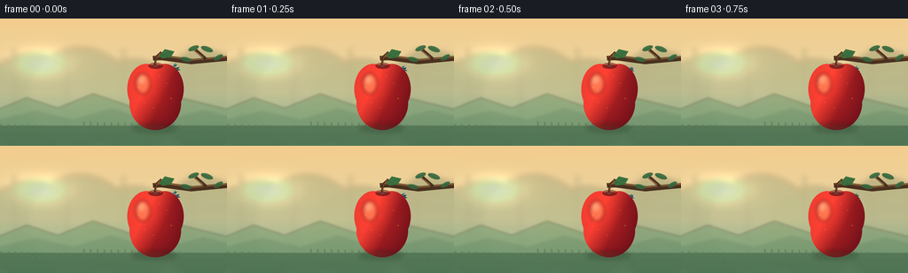
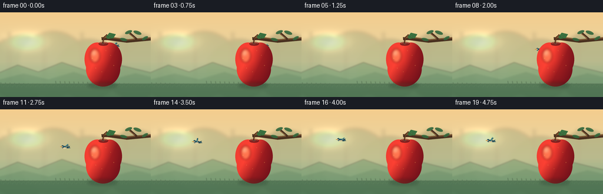

CODING AGENTS AS PIXEL WORLD MODELS
traex/DeepSeek-V4.1-Flash · dynamic_spatial_relationship_0037
点击播放 · 原生 RGB 像素
逐轮保存的候选
回放视频、检查图与代码变化。
每份候选均可单独播放。实际图片检查记录在下方工具轨迹中。
候选 01播放与检查图
点击播放 · 原生 RGB 像素


展开代码变化
--- 上一保存版本
+++ 本次保存版本
@@ -0,0 +1,308 @@
+from __future__ import annotations
+
+import math
+from pathlib import Path
+
+import numpy as np
+from PIL import Image, ImageDraw, ImageFilter
+
+import artifact_io
+
+
+WIDTH = 256
+HEIGHT = 144
+FRAMES = 20
+SS = 4
+W = WIDTH * SS
+H = HEIGHT * SS
+CASE_DIR = Path(__file__).resolve().parent
+
+
+def smoothstep(value: float) -> float:
+ value = max(0.0, min(1.0, value))
+ return value * value * (3.0 - 2.0 * value)
+
+
+def mix(a: tuple[float, float, float], b: tuple[float, float, float], t: float) -> tuple[int, int, int]:
+ return tuple(round(a[i] + (b[i] - a[i]) * t) for i in range(3))
+
+
+def gradient_background() -> Image.Image:
+ y = np.linspace(0.0, 1.0, H, dtype=np.float32)[:, None]
+ x = np.linspace(0.0, 1.0, W, dtype=np.float32)[None, :]
+
+ top = np.array([244, 205, 142], dtype=np.float32)
+ middle = np.array([223, 218, 175], dtype=np.float32)
+ low = np.array([146, 187, 143], dtype=np.float32)
+ blend = np.clip(y * 1.16, 0.0, 1.0)
+ rgb = top[None, None, :] * (1.0 - blend[..., None]) + middle[None, None, :] * blend[..., None]
+ ground_blend = np.clip((y - 0.58) / 0.42, 0.0, 1.0)
+ rgb = rgb * (1.0 - ground_blend[..., None]) + low[None, None, :] * ground_blend[..., None]
+ rgb = np.broadcast_to(rgb, (H, W, 3)).copy()
+
+ # Warm low sun, kept soft so the bird remains the focal silhouette.
+ dx = x - 0.18
+ dy = y - 0.35
+ glow = np.exp(-(dx * dx * 18.0 + dy * dy * 23.0) * 4.2)
+ sun = np.array([255, 239, 181], dtype=np.float32)
+ rgb += glow[..., None] * sun[None, None, :] * 0.34
+ rgb = np.clip(rgb, 0, 255).astype(np.uint8)
+ return Image.fromarray(rgb)
+
+
+def add_background_scenery(base: Image.Image) -> Image.Image:
+ image = base.convert("RGBA")
+ soft = Image.new("RGBA", (W, H), (0, 0, 0, 0))
+ draw = ImageDraw.Draw(soft)
+
+ # Hazy orchard masses.
+ draw.ellipse((-90, 160, 380, 590), fill=(86, 126, 92, 74))
+ draw.ellipse((130, 130, 590, 570), fill=(76, 119, 88, 55))
+ draw.ellipse((380, 185, 820, 585), fill=(88, 129, 87, 65))
+ draw.ellipse((700, 145, 1135, 585), fill=(70, 114, 83, 72))
+
+ # Distant trunks and orchard rows.
+ for x0, width, alpha in [(58, 10, 72), (295, 12, 60), (552, 9, 58), (850, 13, 68)]:
+ draw.rounded_rectangle((x0, 135, x0 + width, 480), radius=width // 2, fill=(62, 85, 66, alpha))
+ draw.line((x0 + width // 2, 245, x0 - 46, 176), fill=(62, 85, 66, alpha), width=5)
+ draw.line((x0 + width // 2, 280, x0 + 80, 205), fill=(62, 85, 66, alpha), width=5)
+
+ soft = soft.filter(ImageFilter.GaussianBlur(13))
+ image.alpha_composite(soft)
+
+ hills = Image.new("RGBA", (W, H), (0, 0, 0, 0))
+ d = ImageDraw.Draw(hills)
+ d.polygon([(-40, 425), (120, 358), (260, 405), (420, 340), (620, 408), (785, 352), (1064, 420), (1064, 620), (-40, 620)], fill=(107, 145, 103, 112))
+ d.polygon([(-40, 465), (160, 416), (330, 456), (500, 405), (710, 468), (920, 414), (1064, 448), (1064, 620), (-40, 620)], fill=(79, 121, 84, 112))
+ hills = hills.filter(ImageFilter.GaussianBlur(5))
+ image.alpha_composite(hills)
+
+ # A quiet foreground band and a few fine stems give depth without clutter.
+ ground = Image.new("RGBA", (W, H), (0, 0, 0, 0))
+ gd = ImageDraw.Draw(ground)
+ gd.rectangle((0, 486, W, H), fill=(54, 88, 61, 132))
+ for x0 in range(-20, W + 30, 31):
+ h = 17 + (x0 * 17) % 22
+ gd.line((x0, 505, x0 - 6, 505 - h), fill=(60, 96, 63, 120), width=3)
+ gd.line((x0 + 9, 508, x0 + 20, 496), fill=(60, 96, 63, 100), width=2)
+ ground = ground.filter(ImageFilter.GaussianBlur(2))
+ image.alpha_composite(ground)
+ return image
+
+
+def draw_branch(image: Image.Image) -> None:
+ layer = Image.new("RGBA", (W, H), (0, 0, 0, 0))
+ d = ImageDraw.Draw(layer)
+
+ # Hanging branch, rendered behind both the bird and the apple.
+ d.line((W + 30, 178, 862, 196, 728, 178, 690, 180), fill=(73, 48, 31, 255), width=22, joint="curve")
+ d.line((W + 25, 170, 868, 186, 736, 168, 697, 172), fill=(119, 79, 45, 235), width=9, joint="curve")
+ d.line((930, 184, 882, 142), fill=(73, 48, 31, 255), width=14)
+ d.line((916, 176, 876, 145), fill=(132, 87, 48, 220), width=5)
+
+ # Leaves are clustered away from the apple's silhouette.
+ leaves = [
+ (934, 139, 58, 24, -20),
+ (874, 135, 52, 22, 22),
+ (840, 185, 50, 21, -14),
+ (986, 176, 46, 20, 30),
+ ]
+ for cx, cy, length, width, angle in leaves:
+ leaf = Image.new("RGBA", (length + 8, width + 8), (0, 0, 0, 0))
+ ld = ImageDraw.Draw(leaf)
+ ld.ellipse((4, 4, length + 2, width + 2), fill=(55, 107, 63, 235))
+ ld.line((8, width // 2 + 4, length - 2, width // 2 + 4), fill=(35, 78, 50, 230), width=2)
+ leaf = leaf.rotate(angle, resample=Image.Resampling.BICUBIC, expand=True)
+ layer.alpha_composite(leaf, (cx - leaf.width // 2, cy - leaf.height // 2))
+
+ layer = layer.filter(ImageFilter.GaussianBlur(0.55))
+ image.alpha_composite(layer)
+
+
+def apple_layer() -> Image.Image:
+ layer = Image.new("RGBA", (W, H), (0, 0, 0, 0))
+ cx, cy = 700, 330
+
+ # Unioned lobes form a crisp apple silhouette with a natural top dimple.
+ mask = Image.new("L", (W, H), 0)
+ md = ImageDraw.Draw(mask)
+ md.ellipse((cx - 126, cy - 125, cx + 45, cy + 102), fill=255)
+ md.ellipse((cx - 43, cy - 125, cx + 128, cy + 102), fill=255)
+ md.ellipse((cx - 116, cy - 65, cx + 116, cy + 174), fill=255)
+
+ yy, xx = np.mgrid[0:H, 0:W]
+ nx = (xx - cx) / 116.0
+ ny = (yy - cy) / 142.0
+ left_light = np.clip(0.72 - nx * 0.58 - ny * 0.35, 0.0, 1.0)
+ radial = np.clip(1.0 - np.sqrt((nx * 0.88) ** 2 + (ny * 0.76) ** 2), 0.0, 1.0)
+
+ dark = np.array([118, 18, 27], dtype=np.float32)
+ mid = np.array([195, 38, 36], dtype=np.float32)
+ warm = np.array([244, 101, 55], dtype=np.float32)
+ shade = np.clip(left_light * 0.58 + radial * 0.42, 0.0, 1.0)
+ rgb = dark[None, None, :] * (1.0 - shade[..., None]) + mid[None, None, :] * shade[..., None]
+ rgb += warm[None, None, :] * np.clip(left_light - 0.46, 0.0, 1.0)[..., None] * 0.58
+ rgb = np.clip(rgb, 0, 255).astype(np.uint8)
+ apple_rgba = np.dstack([rgb, np.asarray(mask, dtype=np.uint8)])
+ apple = Image.fromarray(apple_rgba, "RGBA")
+ layer.alpha_composite(apple)
+
+ detail = Image.new("RGBA", (W, H), (0, 0, 0, 0))
+ d = ImageDraw.Draw(detail)
+
+ # Broad gloss and a thin warm rim keep the fruit volumetric at tiny scale.
+ gloss = Image.new("RGBA", (W, H), (0, 0, 0, 0))
+ gd = ImageDraw.Draw(gloss)
+ gd.ellipse((cx - 89, cy - 83, cx - 23, cy + 11), fill=(255, 176, 111, 116))
+ gd.ellipse((cx - 80, cy - 72, cx - 45, cy - 35), fill=(255, 227, 168, 150))
+ gloss = gloss.filter(ImageFilter.GaussianBlur(8))
+ gloss.putalpha(Image.composite(gloss.getchannel("A"), Image.new("L", (W, H), 0), mask))
+ layer.alpha_composite(gloss)
+
+ # Top cavity.
+ d.ellipse((cx - 31, cy - 130, cx + 35, cy - 103), fill=(91, 24, 26, 188))
+ d.arc((cx - 27, cy - 127, cx + 31, cy - 105), 200, 342, fill=(240, 91, 57, 175), width=3)
+
+ # Tiny freckles, sparse enough to survive the downsample.
+ for fx, fy, fr, alpha in [
+ (cx - 74, cy - 18, 3, 95),
+ (cx - 50, cy + 49, 2, 80),
+ (cx + 51, cy - 38, 2, 66),
+ (cx + 72, cy + 31, 3, 74),
+ (cx - 9, cy + 74, 2, 72),
+ (cx + 19, cy - 70, 2, 62),
+ ]:
+ d.ellipse((fx - fr, fy - fr, fx + fr, fy + fr), fill=(255, 190, 92, alpha))
+
+ # Stem and leaf.
+ d.line((cx - 2, cy - 120, cx + 5, cy - 158, cx + 27, cy - 179), fill=(74, 43, 26, 255), width=9, joint="curve")
+ d.line((cx + 1, cy - 126, cx + 7, cy - 157, cx + 24, cy - 175), fill=(135, 79, 39, 225), width=3, joint="curve")
+ d.polygon(
+ [(cx + 19, cy - 163), (cx + 43, cy - 192), (cx + 86, cy - 182), (cx + 69, cy - 154), (cx + 31, cy - 150)],
+ fill=(54, 111, 61, 250),
+ )
+ d.line((cx + 30, cy - 164, cx + 76, cy - 177), fill=(31, 78, 45, 220), width=3)
+ d.line((cx + 44, cy - 168, cx + 53, cy - 153), fill=(31, 78, 45, 145), width=2)
+
+ # Soft contact shadow beneath the hanging fruit.
+ shadow = Image.new("RGBA", (W, H), (0, 0, 0, 0))
+ sd = ImageDraw.Draw(shadow)
+ sd.ellipse((cx - 105, cy + 146, cx + 96, cy + 183), fill=(39, 61, 42, 74))
+ shadow = shadow.filter(ImageFilter.GaussianBlur(11))
+ layer.alpha_composite(shadow)
+ layer.alpha_composite(detail)
+ return layer
+
+
+def wing_polygon(anchor: tuple[float, float], angle: float, length: float, width: float) -> list[tuple[int, int]]:
+ ax, ay = anchor
+ dx = math.cos(angle)
+ dy = math.sin(angle)
+ px = -dy
+ py = dx
+ tip = (ax + dx * length, ay + dy * length)
+ control = (
+ ax + dx * length * 0.50 + px * width * 0.62,
+ ay + dy * length * 0.50 + py * width * 0.62,
+ )
+ trailing = (
+ ax + dx * length * 0.62 - px * width * 0.68,
+ ay + dy * length * 0.62 - py * width * 0.68,
+ )
+
+ def quadratic(a: tuple[float, float], b: tuple[float, float], c: tuple[float, float], steps: int = 12):
+ result = []
+ for i in range(steps + 1):
+ t = i / steps
+ result.append(
+ (
+ (1 - t) ** 2 * a[0] + 2 * (1 - t) * t * b[0] + t * t * c[0],
+ (1 - t) ** 2 * a[1] + 2 * (1 - t) * t * b[1] + t * t * c[1],
+ )
+ )
+ return result
+
+ points = [(ax, ay)]
+ points += quadratic((ax, ay), control, tip)[1:]
+ points += quadratic(tip, trailing, (ax - px * width * 0.34, ay - py * width * 0.34))[1:]
+ return [(round(x), round(y)) for x, y in points]
+
+
+def draw_bird(x: float, y: float, frame: int) -> Image.Image:
+ layer = Image.new("RGBA", (W, H), (0, 0, 0, 0))
+ d = ImageDraw.Draw(layer)
+ scale = 1.18
+ phase = 2.0 * math.pi * (frame / 20.0) * 2.65
+ flap = math.sin(phase)
+
+ def p(lx: float, ly: float) -> tuple[int, int]:
+ return round(x + lx * scale), round(y + ly * scale)
+
+ def box(x0: float, y0: float, x1: float, y1: float):
+ a = p(x0, y0)
+ b = p(x1, y1)
+ return (a[0], a[1], b[0], b[1])
+
+ # Far wing, visible as a darker echo during the upstroke.
+ far_angle = -0.82 + flap * 0.72
+ far = wing_polygon(p(1.5, 0.0), far_angle, 25.5 * scale, 5.4 * scale)
+ d.polygon(far, fill=(21, 57, 70, 255))
+
+ # Forked tail.
+ d.polygon([p(11, -4), p(28, -8), p(24, -1), p(31, 4), p(11, 6)], fill=(23, 58, 73, 255))
+ d.polygon([p(13, -2), p(25, -5), p(22, -1), p(27, 2), p(13, 3)], fill=(49, 104, 118, 235))
+
+ # Body, head, and cream belly.
+ d.ellipse(box(-17, -8, 15, 8), fill=(24, 62, 78, 255))
+ d.ellipse(box(-17, -7, 10, 7), fill=(39, 88, 103, 255))
+ d.ellipse(box(-12, 0, 10, 8), fill=(225, 203, 156, 248))
+ d.ellipse(box(-21, -12, -7, 3), fill=(24, 62, 78, 255))
+ d.ellipse(box(-19, -10, -9, 0), fill=(42, 92, 107, 255))
+ d.ellipse(box(-20, -7, -12, 0), fill=(233, 210, 164, 250))
+ d.polygon([p(-20, -7), p(-30, -4), p(-20, -1)], fill=(217, 145, 52, 255))
+ d.ellipse(box(-17, -8, -13, -4), fill=(12, 30, 38, 255))
+ d.ellipse(box(-16, -8, -14, -6), fill=(255, 242, 188, 255))
+
+ # Near wing carries the color accent and the strongest silhouette.
+ near_angle = -1.08 + flap * 0.60
+ near = wing_polygon(p(1.0, 1.0), near_angle, 27.0 * scale, 7.2 * scale)
+ d.polygon(near, fill=(40, 111, 126, 255))
+ inner = wing_polygon(p(2.0, 2.0), near_angle + 0.06, 19.0 * scale, 3.5 * scale)
+ d.polygon(inner, fill=(75, 151, 158, 225))
+ d.line(
+ [p(3, 2), p(5 + 13 * math.cos(near_angle), 2 + 13 * math.sin(near_angle))],
+ fill=(209, 125, 62, 235),
+ width=max(1, round(1.4 * scale)),
+ )
+
+ # A few tail and wing separations prevent a flat icon read.
+ d.line([p(13, -1), p(25, -4)], fill=(14, 43, 56, 210), width=max(1, round(1.3 * scale)))
+ d.line([p(13, 2), p(24, 1)], fill=(14, 43, 56, 170), width=max(1, round(1.0 * scale)))
+ return layer
+
+
+def make_frame(background: Image.Image, apple: Image.Image, frame: int) -> Image.Image:
+ image = background.copy()
+
+ # Hold behind the fruit, then clear its left edge with a brisk, eased flight.
+ raw = max(0.0, min(1.0, (frame - 2) / 15.0))
+ travel = smoothstep(raw)
+ x = (194.0 - 129.0 * travel) * SS
+ y = (57.0 + 10.0 * math.sin(math.pi * travel) - 4.0 * travel + 1.2 * math.sin(frame * 0.72)) * SS
+
+ bird = draw_bird(x, y, frame)
+ image.alpha_composite(bird)
+ image.alpha_composite(apple)
+ return image.convert("RGB").resize((WIDTH, HEIGHT), Image.Resampling.LANCZOS)
+
+
+def main() -> None:
+ background = add_background_scenery(gradient_background())
+ draw_branch(background)
+ apple = apple_layer()
+ frames = [np.asarray(make_frame(background, apple, i), dtype=np.uint8) for i in range(FRAMES)]
+ artifact_io.save(frames, CASE_DIR)
+
+
+if __name__ == "__main__":
+ main()
可观测工具轨迹
实际执行的命令与返回图片。
命令 1exit 0
/bin/bash -c "sed -n '1,240p' GENERATION_RULES.md"
命令 2exit 0
/bin/bash -c 'cat prompt.txt'
命令 3exit 0
/bin/bash -c 'cat task_spec.json'
命令 4exit 0
/bin/bash -c "find . -maxdepth 2 -type f -printf '%p\\n' | sort | head -200"
命令 5exit 0
/bin/bash -c "sed -n '1,260p' artifact_io.py"
命令 6exit 0
/bin/bash -c "sed -n '1,220p' player_template.html"
命令 7exit 0
/bin/bash -c "python - <<'PY' import importlib.util for m in ['numpy','PIL','cv2','imageio','matplotlib']: print(m, bool(importlib.util.find_spec(m))) PY"
命令 8exit 1
/bin/bash -c 'python generate.py'
命令 9exit 1
/bin/bash -c 'python generate.py'
命令 10exit 0
/bin/bash -c 'python generate.py'
命令 11exit 0
/bin/bash -c "python - <<'PY'
from pathlib import Path
import json
import numpy as np
from PIL import Image
p=Path('.')
frames=sorted((p/'frames').glob('*.png'))
arr=np.stack([np.asarray(Image.open(f).convert('RGB')) for f in frames])
print('frames', len(frames), 'shape', arr.shape, 'dtype', arr.dtype)
print('frame range', int(arr.min()), int(arr.max()))
with np.load(p/'pixels.npz') as z:
print('pixels.npz', z['pixels'].shape, z['pixels'].dtype)
print('index bytes', (p/'index.html').stat().st_size)
print('non-identical adjacent frames', sum(not np.array_equal(arr[i],arr[i-1]) for i in range(1,len(arr))))
print('changed pixels by transition', [int(np.any(arr[i]"'!=arr[i-1],axis=2).sum()) for i in range(1,len(arr))])
PY'视觉工具实际返回图片 1

视觉工具实际返回图片 2

保存候选 1 份；完成命令 11 次；可验证图片返回 2 张。原始 API 响应与完整日志保留在本地。